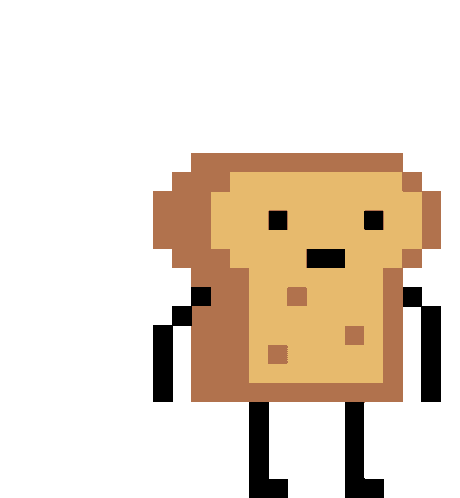
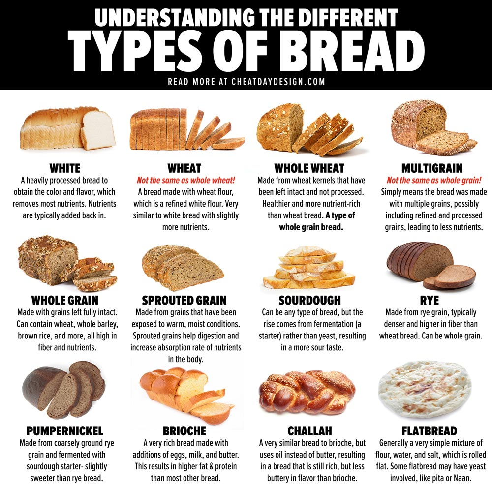
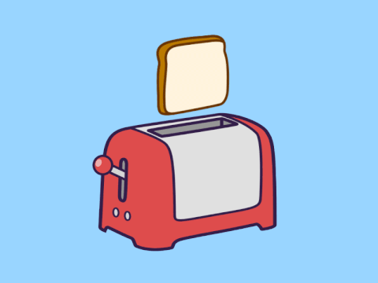
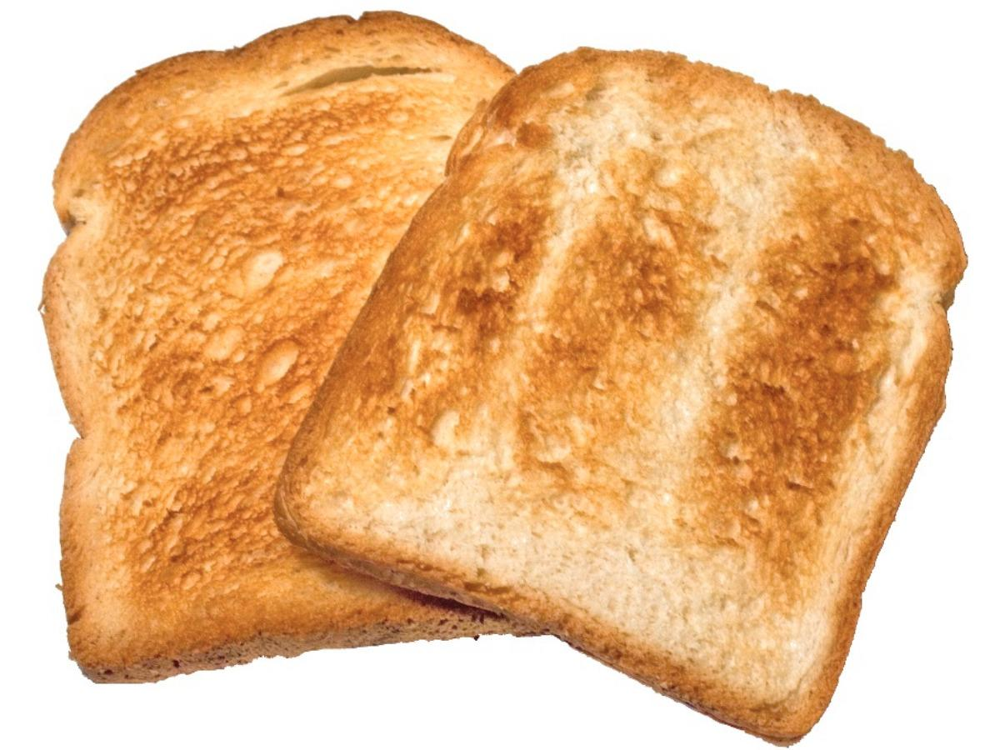
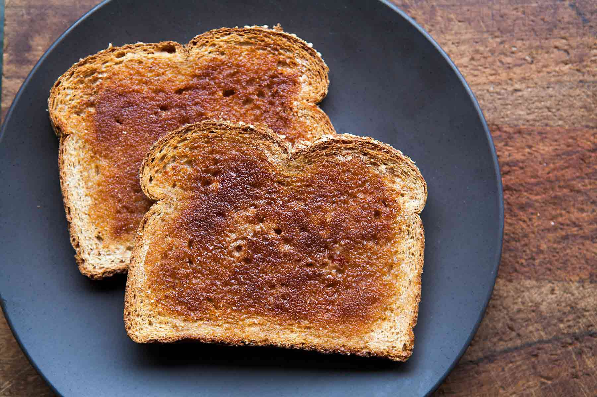
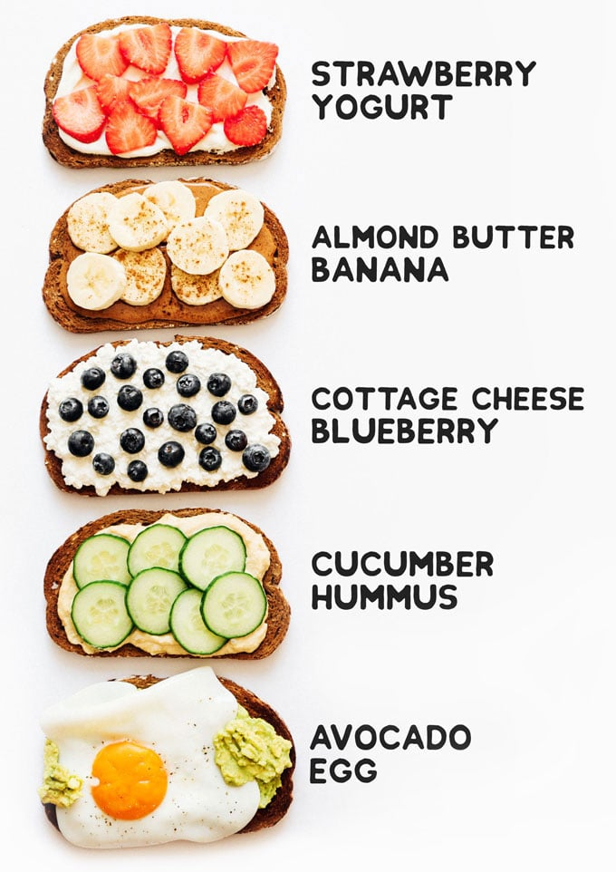

This will be a tutorial on how to make toast. Till this day toast is an enjoybale snack that many can munch on. You can add so many combinations to them. Theoretically toast was invented by the Egyptions for leaving the bread out making it stale. Stale bread is the best bread. Toast will be a top snack of everyday life.
The first step in making toast is to choose the type of bread you would like to get. It can be white bread, whole grain, whole wheat, and etc. We don't judge the type of bread you choose. Once you picked your favorite type of bread we move on the next step. Which is toasting the bread.
Once you have choosen your type of bread. It is time to dump it into the toaster. What is a toaster? Its a kitchen appliance that is simple and user-friendly that can help heat up bread. Giving you a crsipy crunch. You slide one slice of bread into each slot of the toaster. Denpeding on how many slots you have in your toaster. Once thats done you set the temperature or the toasting level of your choice. BECARFUL TO NOT OVER DO IT! If done poorly you will get burnt toast.
 Once the slice of bread is done toasting you can take it out and put it on a plate.CONGRATULATIONS!!! You have made toast and hopefully have not burnt it. Now you can munch away.
This step is only if you wanna be fancy. Now if you want to eat plain toast then that is fine but remmeber you can combine other condiments to toast. There are other recipes that can help create a plain ol toast to something marvelous. Let your taste buds explore.
